国际政经观察者
今年的5月格外热闹，美俄两国元首先后来华访问。特朗普访华后，白宫确认了中方提出的“建设性战略稳定关系”，再一次宣布自己达成了“历史性协议”。普京访华后，两国发表了《关于进一步加强全面战略协作、深化睦邻友好合作的联合声明》，以空前的篇幅，不仅描摹了经贸投资、能源资源、交通运输、科技创新等务实合作新安排，同时也对大量国际热点问题进行了对标。
与此同时，大量外国政要纷纷出访北京，凸显中国地位。反映了在日益动荡的世界里，各国来北京寻找确定性的急迫感。
在这背后，是中美俄“大三角”关系正在发生历史性变化。中国取得了来之不易的战略主动，而如何用好这种主动，将是下一阶段的一项重要课题。
一、美国身陷不愿承认的体制问题
美国方面，我们不说那些宏大叙事，先从特朗普近期的支持率开始破题。
中期选举不断逼近，特朗普的支持率依然没有太大起色，如今净支持率已经跌到了-21%，远低于自己第一任期和拜登任内的同期水平（分别为-10%和-8%）。《经济学人》甚至认为，民主党有九成概率在中期选举赢得众议院控制权。
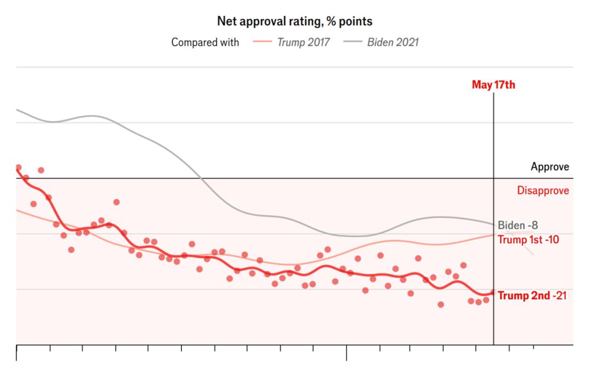
特朗普第一、第二任期与拜登任内同期净支持率变化对比。图表来源：The Economist
一些观点认为伊朗战争拖累了特朗普的民调。但我们细看上图就可以发现，特朗普的支持率从就任开始，就进入到几乎没有提振的下行通道。并且近期连自己的MAGA铁盘也开始下滑。最重要的问题依然出在经济上，认可特朗普经济政策的选民萎缩到三分之一，而共和党选民中对特朗普经济政策的支持率，在区区两个月内，骤然下滑了16个百分点。
要知道，本来经济议题，尤其是克制通胀，是2024年美国大选中，民众对特朗普最抱以希望的，如今却又成为了特朗普最不受待见的地方，这个形势对于本届白宫来说，已是非常危险。
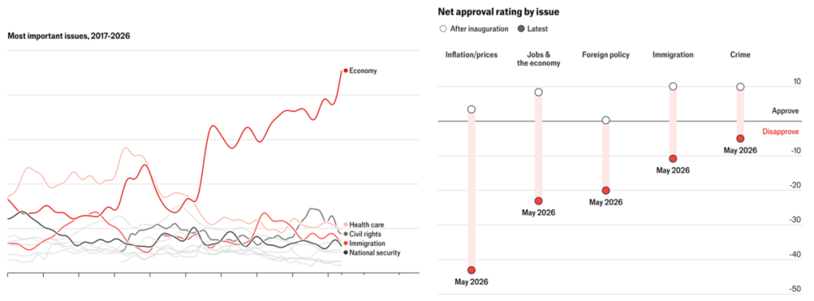
近10年来美国选民各议题的关注程度（左图）和特朗普在相关议题上的净支持率（右图）。图表来源：The Economist
笔者早在特朗普刚刚当选后发表的“难治愈”和“七伤拳”中，就连续预判过特朗普在应对物价、收入和就业中将会应对乏力，如今的事实也正是如此美国官方口径统计的就业率，自特朗普就职以来已经下降了一个百分点，失业率上升了0.3个百分点，这其中还不包括大量的功能性失业人群，并由此衍生实际收入下降、贫困、无家可归等社会问题，在特朗普任内都没有解决的起色。如今四分之三的美国人认为自己的经济状况“一般”或“贫穷”，63%的人认为情况正在恶化。
其中最为典型的就是日用品价格，我们在2024年的系列前文里曾不厌其烦地列举这些数据。如今再次盘点，情况正在比纸面上的通胀数据恶化得多。以食品为例，自2022年年初以来，美国食品价格的涨幅达到20.3%，同期联合国粮农组织统计的全球食品价格指数仅增长了不到4%，美国“遥遥领先”。
特朗普在竞选期间曾经多次拿食品价格揶揄拜登政府，如今要轮到他来斥责别人议论涨价是“假新闻”了。
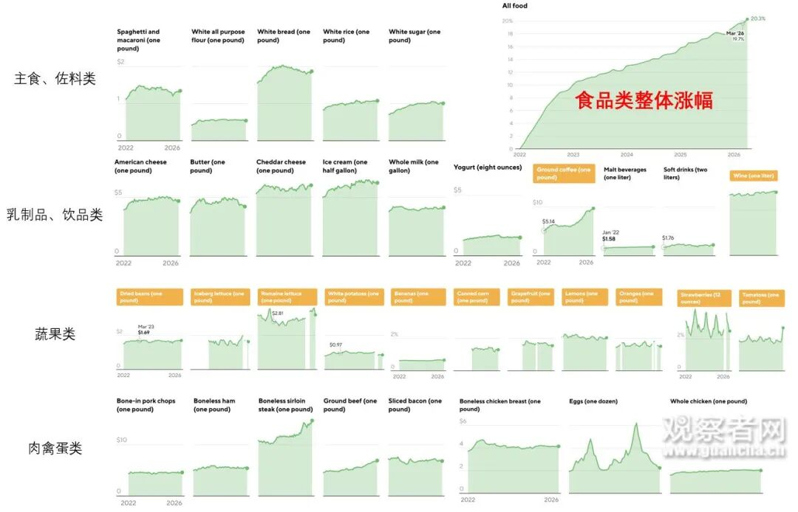
2022年1月以来美国各类食品的价格变化。数据来源：美国劳工部，CBS News
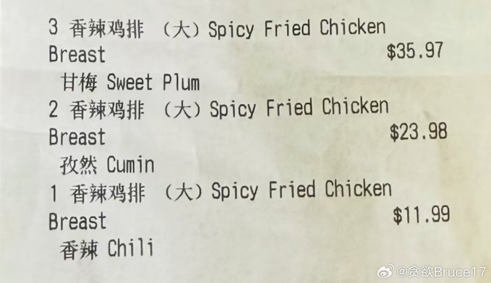
就在笔者写作时，有网友发来一张来自美国的账单，国内不到10元人民币的正新鸡排，在美国已经卖到了11.99。计价单位：美元
不幸的是，涨价的还远不止是食品，水电煤气、新车价格、住房医疗的价格也都仍在增长，甚至是急速增长。
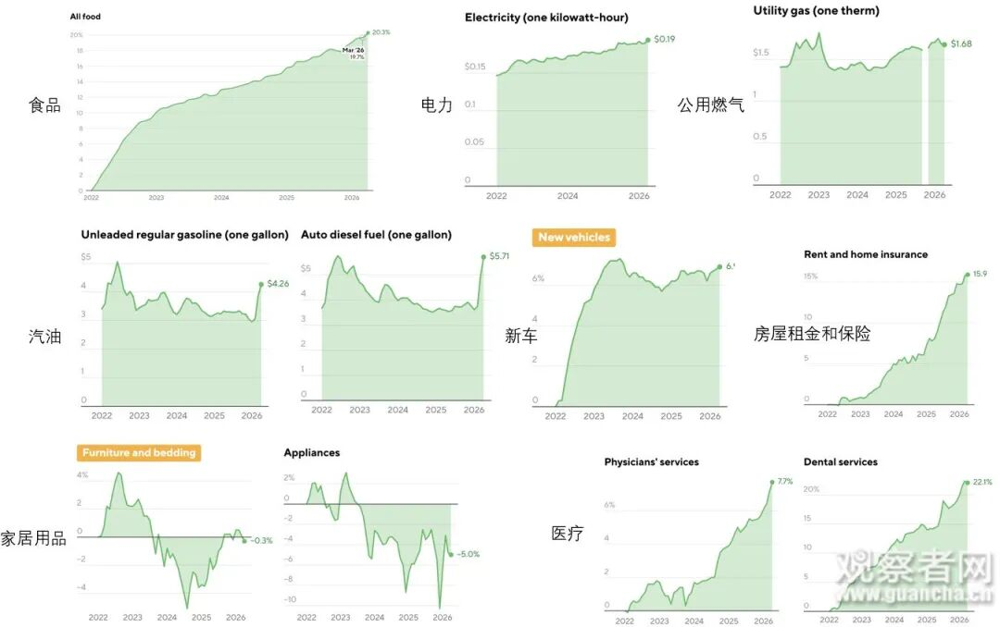
2022年1月以来美国主要日用品价格变化。数据来源：美国劳工部，CBS News
很多宏观报告会千篇一律说“美国温和通胀”、“美国通胀率稳定”。事实上，这是统计学的魅力时刻。黑板经济学家口中那个“平稳的通胀率”只是一个加权平均数，美国普通民众面对的却是2020年以来，天然气涨了接近60%、电费增幅逼近50%、各类食品开支增加近1/3。
这些与日常生活最密切、购买频率最高的柴米油盐、水电煤气，就这样被悄悄稀释在了统计的加权里，让民众成为看不见的代价。
而且可预见的未来，美国的日用品价格上涨依然刹不住车，以水电煤气为例，据统计，美国公用事业公司在2025年申请费用涨价共计310亿美元，是2024年的两倍多。又在2026年一季度再度申请了94亿美元的涨价，是去年同期的两倍多。
AI数据中心对能耗的需求、联邦与州各自叠床架屋的结构、缓慢的行政更新效率、两党政府对于新能源和传统能源的相互拆台和举棋不定、熟练工人的短缺，叠加极端天气与美国挑动国际局势造成的反噬，都将继续推动这些基础商品的涨价，也将进一步放大美国国内的民生问题。
对于这样的体制问题，破局方法唯有深化内部的改革与治理，推动生产关系的深度重组。而我们看到一届届美国政府都无意于此，都在倔强地将此归咎于对手执政不力。
于是，如今每次美国总统就职，都是批判下台的上一届，发誓重启阳光灿烂的日子。而每次总统大选、每一届美国政府的对手，都在渲染本届政府在把美国带向毁灭——用新瓶装旧酒，继续吆喝着：拿什么拯救你，我的美国。
笔者之前曾从钢铁、矿石、炼化以及制造业回流进度，从宏观到微观分析过美国产业经济的痼疾。这次又从美国日常出发，从微观到宏观，分析美国为何无法甩脱自己的结构性矛盾。正如笔者两年前在美国大选时，仔细对比完两党竞选政纲后所下的断言：
“最多再进行两三次类似的总统大选，美国人民的制度自信就会被深度动摇了。”
当前，美国依然是“大三角”中综合国力最强的那个。但是经济结构出现如此的系统性病变，内部民意的反噬将持续酝酿集结。无论是美帝维护霸权的体制惯性，还是特朗普维持自身统治，乃至避免2028年后人身遭遇清算的主观需要，都会决定美国接下来的出招非常躁动。
对于特朗普来说，还有一个额外的“一根筋两头堵”：他的MAGA运动基本盘是美国工农，如果特朗普继续强推贸易保护主义，所遭致的反制，会更伤害MAGA阵营里的农民和石化工人。但如果真和中国达成协议，贸易战休兵，接受境外廉价商品，就会更伤害MAGA里基础制造业的工人。
两种选择，无论怎样都会导致自己基本盘的撕裂。这是特朗普用民粹强行煽动MAGA叙事后必然要遭的报应。
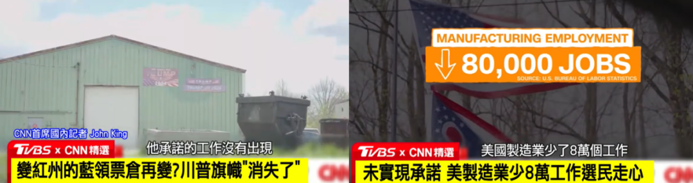
近期美国媒体开始出现MAGA阵营因特朗普承诺未兑现而分化的报道。
在这样的背景下，美国对华政策将会变得更加两面派。具体措施上，直接挑衅仍不会停止，对于“产能过剩”、“强迫劳动”的两个301调查正在加速进行，对华制裁黑名单仍在急速扩容。但从上文列举的美国当前日用品价格就能看出，美国在战略上，已经丧失了对华发起全面经济战的能力，这将首先打崩自己的物价，造成民生和社会的动荡。
因此，美国将采取更多左右逢源的操弄。一方面对华和谈，稳定与中国的经贸关系，选择性吸收中国商品和资金给白宫执政续命，这也是为什么本文开头白宫自夸“历史性”的“协议”，大量篇幅谈的仅仅是中美间的买卖。
另一方面，开始从更为宏观的层面搞不点名中国的反华设计，从矿产、能源、航道、海外投资、贸易协议“毒丸”条款等方向，大搞排他性产业联盟，勒索西方盟友投资，试图重建自己的产业制造和供应链，减少对中国依赖。并一次次以诸如“强迫劳动”、“产能过剩”、“国家安全”这样的理由，不断给美国对华制裁的黑名单扩容，将对中国企业转型升级的粗暴干预由点推面，减少关注度。
二、俄罗斯的韧性正在受到削弱
“大三角”的另一边，俄罗斯面对西方空前的制裁浪潮，已经坚持很久了。SWIFT被切断、外汇储备被冻结、出口遭遇集中管制，累计制裁措施达上万项……在制裁中，俄罗斯通过一系列手段，包括能源价格的阶段性高企、资本管制的有效实施、卢布汇率的刚性管控、能源与货币结算的深度绑定、军工企业的订单拉动，以及组织转口贸易和影子船队，展现出超预期的韧性。根据世界银行的数据，2023年和2024年GDP分别实现4.1%和4.9%的增长。
无论是乌克兰战场面对整个北约体系的支持，还是大后方成功撕开西方制裁的缺口，俄罗斯的坚挺也证明了自己确实还属于“大三角”中的一极。
但俄罗斯也是“大三角”里最脆弱的那一个，2025年经济增速已经出现了较大幅度的下滑，官方承认的数据也仅有1%。战场形势的焦灼使得成果变现难以追上回报收益，“以战养战”愈发难以实现。
5月17日俄罗斯莫斯科市和多处能源设施遭遇乌克兰近期最大规模无人机袭击。
如今俄罗斯军工行业对经济大盘的支持已经是边际效用递减，乃至呈现出失速征兆。根据俄罗斯经济发展部预测，2025年工业产出增长仅为1%，远低于2024年的5.6%。
并且俄罗斯近期的能源生产和社会秩序也受到了极大的干扰，据统计，2026年年初以来，遭到乌克兰无人机袭击的炼油厂数量翻了一番，完全停产或大幅减少运营的炼油产线，已经占到俄罗斯全国炼油产能1/4。包括莫斯科在内的俄罗斯城市近期遭受乌克兰袭击的频次也开始回升，基本生活秩序遭遇的干扰，也将传导到生产当中。
长期的战争与制裁终究在削弱俄罗斯的经济和韧性，其通胀率长期高于央行目标，基准利率长期处于高位，严重抑制了私人部门投资。西方技术制裁的后果正在不断显现，自战争开始以来，俄罗斯购买的芯片中有超过80%来自东方，且以民用级别的落后制程为主。俄罗斯多次被曝出试图以走私形式从西方国家和土耳其采购先进芯片，但供应量极不稳定。这不仅影响到俄罗斯在战场上关键装备的精确制导能力，更重要的是，在人工智能、量子计算等技术领域正被越拉越远。
总之，如今的俄罗斯正处于缓慢失血的状态。
也正因此，强化对华合作关系是当前俄罗斯所急需的。此次普京来访被戏称为“搬空克里姆林宫的访问”，双方签署了两份声明、20项双边合作文件并宣布了20项双边文件，这42份文件涵盖工业、交通、核能等多个合作领域。
当然，俄罗斯依然是“大三角”中的一角，仍然保有一定的筹码。集安组织仍保有一定的影响力，俄罗斯在中东、东北亚和非洲的战略影响还在深化。本次访华未能如之前预期的那样签订“西伯利亚力量2号”天然气管道合同。多个信源显示，双方对管线走向和天然气价格仍存在分歧，在欧盟正在逐渐要求收紧对俄天然气进口的背景下，中俄还有如此博弈，也可见俄罗斯尚有腾挪空间。
三、我们将会看到一个更加失序的世界
在“大三角”以外的世界，也正开始出现前所未有的新变化。
一是供求两端都已经走到了“东升西落、南北重组”的前夜。上世纪80年代，G7占全球GDP约一半，如今已经不足30%，而金砖国家已经实现了反超并且差距还在越拉越大。至于制造业份额，发达国家与发展中国家之间也在急剧逆转。
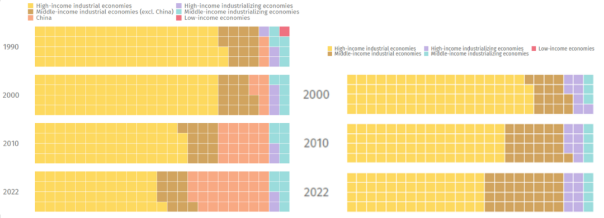
实现工业化的高收入国家，其制造业增加值在1990年占全球份额高达74%，到2022年仅有49%。在制造业出口中的份额由2000年的75%收缩至2022年的56%，预计再过几年同样将跌破一半份额。
发展中国家的产业升级和收入提高，也将刺激需求，预计到2050年，全球三分之二的需求将来自发展中国家，这将极大地改写消费市场的格局。
二是发达国家自身内部发展模式的问题，刺激它们做出“内忧外偿”的破坏性动作。大量传统发达国家制造业出现了空心化，更为聚焦服务行业、以商业品牌运营和金融市场预期引导，以赚取和套现超额收益，并建设高福利社会。它们的内部发展模式既依赖对外剥削，但又不得不面临对外剥削能力不断衰减的矛盾局面，最终这种模式也将难以为继。
在这些国家的政府、企业和居民部门纷纷大量消耗储蓄、扩大负债与赤字的同时，类似美国那样的通胀正在持续蔓延，人们的购买力和生活体验也随之不断滑坡。在欧洲，这样的问题已经凸显，GDP与收入、获得感的分化愈演愈烈，一旦再遭遇到疫情与俄乌冲突这样的“黑天鹅”，极有可能会惊起一排“灰犀牛”。
以老欧洲为代表的这批发达国家，一边错过科技革命，自身的终端品牌不断被境外收购；一边面临产业与资本外流，传统的经济格局难以为继。在既不甘心被超越、又坐吃山空的两难处境下，加上中东欧部分国家对自身安全的历史性焦虑，如今的欧洲已成为“弃约精神”、大国操弄与地缘拱火的高发地带。从“安世之乱”到英国强推钢铁公司国有化，从北约东扩到俄乌冲突，再到针对“产能过剩”“强迫劳动”的无端指责——欧盟正处于举措失当、战略焦虑的困顿期。
三是南方国家内部也正在出现分化，有资源禀赋的国家民粹还会抬头。过去几十年，美西方金融带动的发展模式产生了极强的外部性，南方国家的发展同样越来越依赖债务驱动。根据联合国的统计，发展中国家的债务规模在过去20年扩张了4倍，利息净支出到2023年就已高达8470亿美元，两年内增长了26%，至少有54个发展中国家，将至少10%的财政支出用于还利息，每年还债支出超过医疗和教育的国家，累计人口已经高达33亿人。
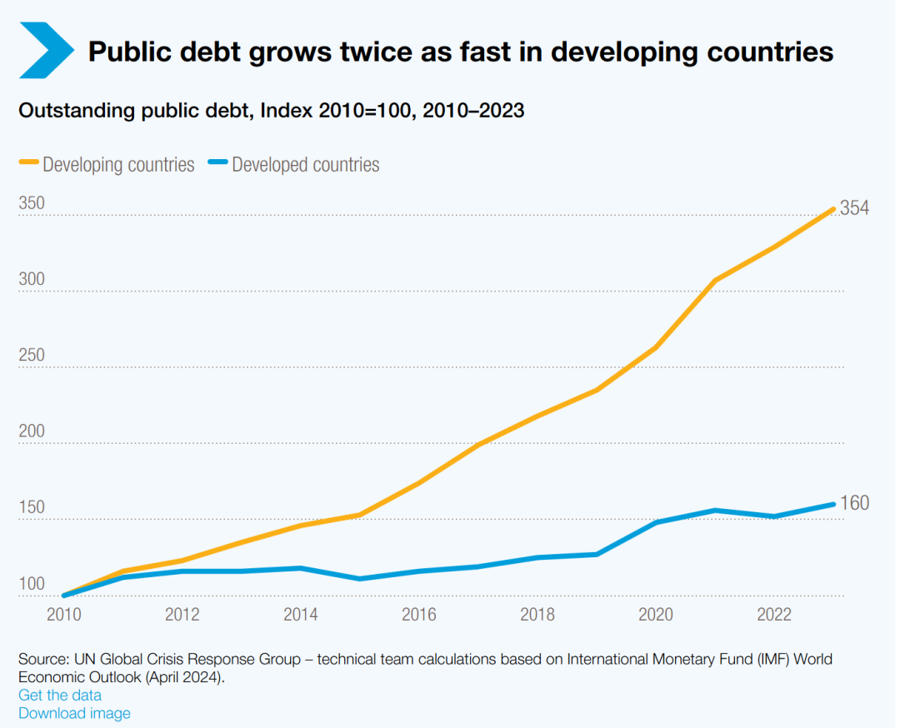
发达国家与发展中国家公共债务增长对比。
根据联合国开发计划署估计，已有52个发展中国家面临某种形式的债务困境。为了避免债务违约，不少发展中国家以债务驱动投资的空间遭到了压缩，由此也会进一步削弱其抗风险能力，放大他们在面临国际秩序震荡、地区冲突、能源危机、大国长臂管辖乃至自然气候问题时的风险敞口。
在这样超发债务、货币没处去的全球动荡下，货币一旦扭曲，掌握“货”的就将比掌握“币”的更重要。拥有特定资源、航道、或在生产销售环节占据重要地位的发展中国家，地位会更得到重视，也必然将不断受到美西方的拉拢和威压，各种“集体西方”底色的排他性联盟，或被西方国家以国内法制裁要求配合为由协助其长臂管辖，或在经贸与技术合作协议中被塞入对特定第三方的“毒丸条款”……而这些突破原有国际规则默契的做法，也将刺激他们以手中的资源为武器，对比他们强大得多的国家坐地起价。
也正因此，在未来至少十年内，我们将看到本位主义、民粹主义与逆全球化浪潮形成各种激流险滩。头部的超级大国带头拆毁规则，传统的发达国家纷纷弃约，南方国家在经济压力下可能债务组团违约，掌握资源的发展中国家则是在规则与违规间坐地起价、左右逢源，这背后的问题则是发达国家超额收益与实际能力长期脱节，通过全球化1.0造成了反噬。
要改变这样的局面，需要整个南方国家团结起来，探索能够保障各自合法合理权益的新秩序，这可以说是新时代国际政治的“得民心者得天下”。
四、当前形势，中国需要做什么？
通过上文的分析，我们可以看到，传统“大三角”上的美俄两国的发展都已深陷泥潭，对于美国基层民众最为关切的物价、就业、收入问题，美国政府应对乏力的背后，是美国经济基础的产业空心化与上层建筑的体制改革迟缓，最终会将美国的经济矛盾演变为社会矛盾与族群矛盾，现在仍在积累当中，看不到改善的可能。
而俄罗斯在苏联解体以后，始终未能重建科学合理的产业结构，原有的制造业体系也日趋落后，正在成为一个拥有核武器的大号沙特。政治上自苏联解体以来，始终未能形成一个传承有序的领导更替制度，政治稳定问题始终是悬在头上的达摩克利斯之剑。思想上也始终未能形成有足够凝聚力的意识形态，以至于圣彼得堡闹出同时悬挂沙俄、苏联、俄罗斯国旗的奇景。俄罗斯的国际地位也始终在被侵蚀，连原苏联加盟共和国的影响力也逐渐式微，叠加俄乌冲突长期化的诸多影响，俄罗斯正在被缓慢放血。
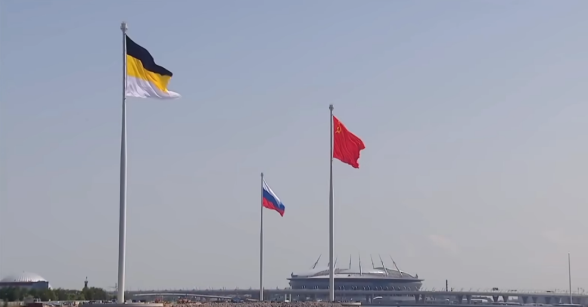
2023年，圣彼得堡芬兰湾这出和稀泥一般的“通三统”。
相比之下，我们已经成为“大三角”中无可置疑最有建设性的一个，中国的制造业冠绝全球，占比仍在不断扩大；外贸节节攀升巩固着中国“世界工厂”的地位；中国的高新技术正在厚积薄发，外国“工业王冠上的明珠”已经寥若晨星；依托强大的制造业和科技实力，中国的军事实力正在迎来划时代变革的前夜，在不远的将来我们将拥有全世界最为强大的常规军事力量；依托十亿人量级的超大规模经济体，对内改革调结构，对外开放扩市场，我们的“双循环”将大有可为。
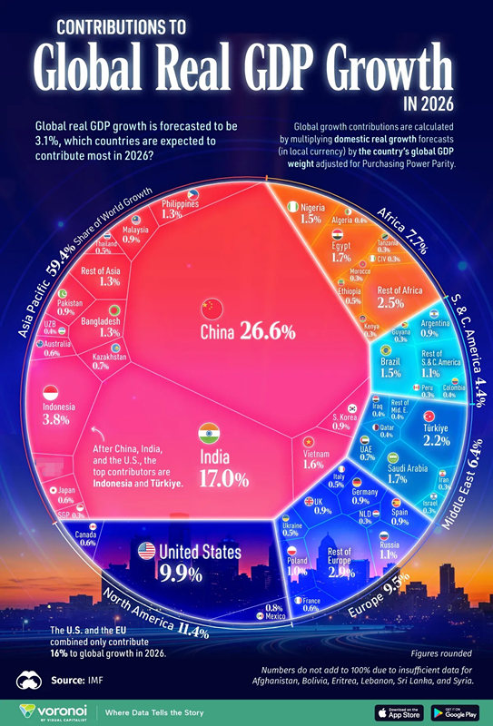
IMF预估的2026全球经济增长贡献分布，美俄合计仅为中国的四成。
这些都将是如今的美俄所无法具备的蓬勃。而更为难能可贵的，就是在此时，我们与美俄依然保持着各自的合作。美国慑于国内的经济形势，尤其是通胀压力，已经难以对华彻底脱钩。中俄之间更是确立了新时代全面战略协作伙伴关系，在俄美关系结构性矛盾、难以重启的大背景下，双头鹰只能更加背靠东方。
当然，我们要清醒地看到，当前“大三角”格局依然还在存续，美俄两国除了核武库以外，还掌握着一些中国所不具备的比较优势。美国的霸权依然存在，其对于世界秩序的掌控、利用规则施展长臂管辖、利用武力进行干预威慑、利用金融控制资金流向、利用文化进行持续渗透……每一项能力都是中国需要应对或补课的。
俄罗斯在苏联解体的震荡期，不仅能够稳住阵脚，还能积极向外拓展影响，特别是一手抓能源、一手抓安保，在中东与非洲开展了一系列地缘布局，强化了在相关国家的权益。俄罗斯在应对美西方制裁时卓有成效的应对，足以作为中国开展反干预、反制裁、反长臂管辖斗争的参考。俄罗斯的强硬维权对于国家发展的正常节奏是“双刃剑”，但其中敢于从制度破题、向对方体系出手的成分，也足以为我国未来的海外维权所借鉴。
实事求是地说，中国虽然已经是大三角里最具有建设硬实力的那个，但是我们围绕制度、手段、思想依然较二者有较大的欠缺，当前依然存在能力不足、效果倒挂的局面。
在商品、基建和资本纷纷出海的同时，我们在运营体系、行业标准、品牌运作等领域仍有不少欠缺，制造大国还没有完全成长为制造强国。我们在金融体系建设、法审信评等配套服务行业发展、公共商品提供与意识形态输出依然不足，缺乏与超大规模经济体相匹配的感召力。我们的对外交往还有待更为丰富的参与协同与工具开发，我们的军事实力也需要走得更远，不仅要为“仗剑行商”提供强有力保障，也能让友好国家可以安心对华合作。
这些问题的悬而未决，将会影响我们应对后续的本位主义、民粹主义与逆全球化浪潮时的效果。不久前俄罗斯科学院欧洲研究所副所长罗曼·伦金在与观察者网对话时，曾称中国正处于世界秩序的核心位置，笔者认为以当前条件仍属言过其实。
中国如今的经济发展也并非一帆风顺，我们这阶段经济结构大调整所造成的影响还在蔓延，同样影响到了群众就业和收入。我们在过去相当一段历史时期，债务增长势头同样大大超过了经济增速，不少地方政府的实际付息支出同样超过了10%。我们的新增长点现在还需要巩固，不仅需要国内市场的培育，也需要在出海场景中检验成果、开拓市场，带动双循环。
而在这千头万绪中，笔者认为最重要的有两件事，一是参与国际规则制定，二是塑造负责任形象。
我们需要更为深入地介入到国际秩序的构建之中，我们需要将政治与经济结合起来，更为主动地参与各行各业的行业标准、法律法规制定，将中国方案向着制度化的纵深推进。我们在推动产品和服务出海中，还需要推动从货币到思想的“走出去”，形成我们软硬实力综合化出海的范式。我们需要以破为立，用好我们的《反外国制裁法》和《阻断法》，给出海企业一个维权的保障，而这个打破霸权的规矩，就是我们新阶段的法则。我们需要积累破立之间的海量案例，去挖掘一个个故事和场景，去充注我们全球治理倡议的内容，让倡议制度化。
后续若要真正推进美中贸易委员会和投资委员会，我们须先具备这样一种能力：与美国既谈实力的地位，也谈实力的规则。
另外，要用好我们的综合实力，让挑衅中国的后果能够以规则的形式，被大家认知到。我们需要从国家主权、地缘环境、经济安全等维度，挑出若干典型的“人已犯我”的案例，进行着重打击，形成样板。尤其是日本这样体量适中、经济发达、素有积怨的国家，我们的反击更要长期而制度化，向着总收全功迈进。我们需要考虑如何用好经济和外交手段，协助重要合作伙伴反击美西方的霸凌和制裁。同时，我们也该思考如何在和平年代用好自己的飞机和军舰，去联动资本市场最为看重的预期加以引导。我十分赞同基于区域国别的研究，动员各种社会力量，在当事国建立海外综合服务平台和海外综合服务站，并将其作为海外维权第一线的战斗堡垒。
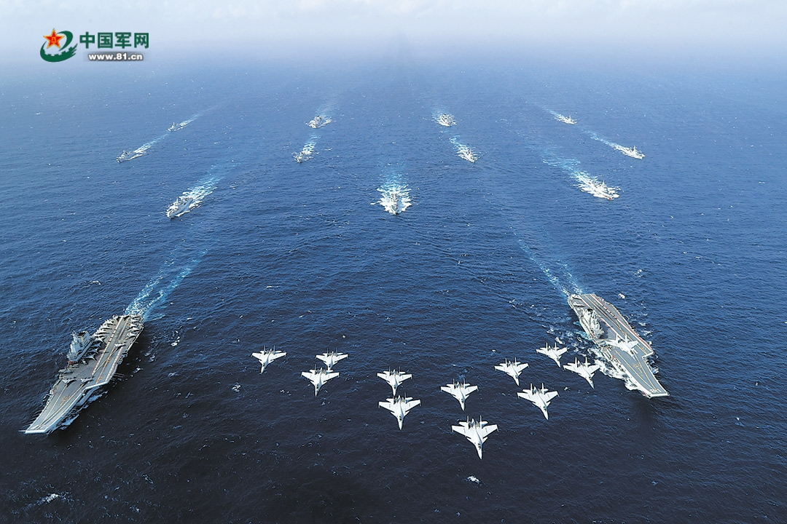
我们需要全方位的高效协同、走得更远……
世界走向失序，必然会更加畏威而不怀德，在失序的风浪之中，中国要走出一条兼顾自身发展和全人类共同发展的新路来，构建负责任的大国形象，建立从实力地位出发的规则秩序，才能一拳打开免百拳。
上一篇专栏，笔者曾提到要把美国及其滥用的权力关进制度的笼子里，其实这适用于所有对华挑衅的国家。而这制度的笼子，正可以在这波“大三角”关系演变中，为我们所悉心打磨。